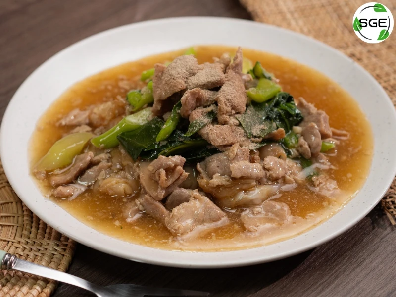

ราดหน้า

Ingredients (วัตถุดิบ)
- เส้นใหญ่ 1 ที่
- หมูหมักหรือไก่ 150 กรัม
- ผักคะน้า 1 กำ
- แป้งมัน 1 ช้อนโต๊ะ
- ซีอิ๊วขาว 2 ช้อนโต๊ะ
- ซีอิ๊วดำ 1 ช้อนชา
- น้ำซุป 1½ ถ้วย
- พริกไทยป่น
Steps (วิธีทำ)
- ผัดเส้นใหญ่กับซีอิ๊วดำให้หอม พักไว้
- ตั้งกระทะ ใส่น้ำซุปแล้วนำไปต้มให้เดือด
- ใส่หมูหมักลงไป ต้มจนสุก
- ใส่ผักคะน้า ปรุงรสด้วยซีอิ๊วขาว
- ละลายแป้งมันกับน้ำ แล้วเทลงไปคนให้ข้น
- ตักน้ำราดหน้าราดบนเส้นใหญ่
- โรยพริกไทย พร้อมเสิร์ฟ
Nutrition Facts (โภชนาการ)
- Calories: 480 kcal
- Protein: 24 g
- Carbohydrates: 60 g
- Fat: 14 g
← Back to home